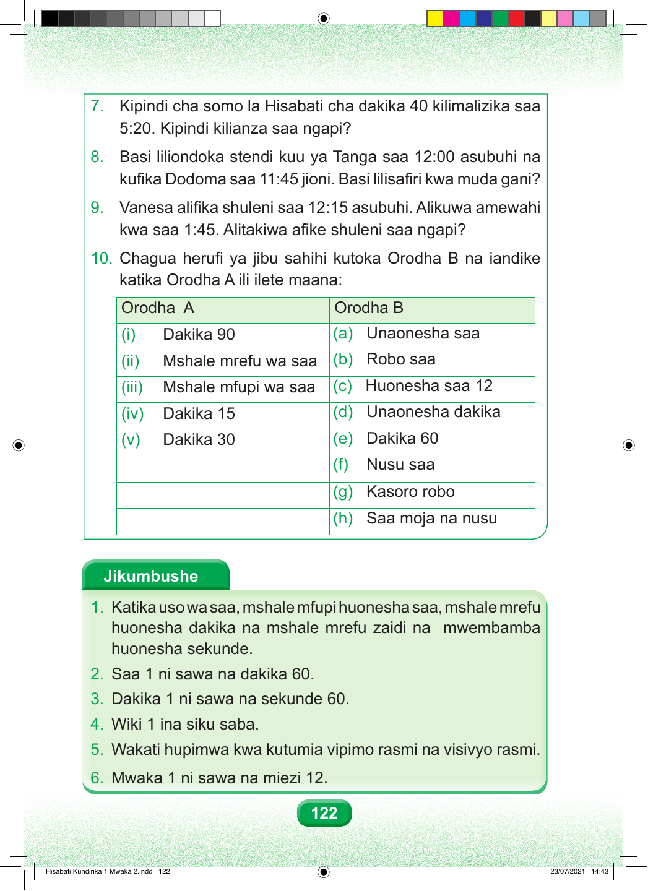

122 7. Kipindi cha somo la Hisabati cha dakika 40 kilimalizika saa 5:20. Kipindi kilianza saa ngapi? 8. Basi liliondoka stendi kuu ya Tanga saa 12:00 asubuhi na kufika Dodoma saa 11:45 jioni. Basi lilisafiri kwa muda gani? 9. Vanesa alifika shuleni saa 12:15 asubuhi. Alikuwa amewahi kwa saa 1:45. Alitakiwa afike shuleni saa ngapi? 10. Chagua herufi ya jibu sahihi kutoka Orodha B na iandike katika Orodha A ili ilete maana: Orodha A Orodha B (i) Dakika 90 (a) Unaonesha saa (ii) Mshale mrefu wa saa (b) Robo saa (iii) Mshale mfupi wa saa (c) Huonesha saa 12 (iv) Dakika 15 (d) Unaonesha dakika (v) Dakika 30 (e) Dakika 60 (f) Nusu saa (g) Kasoro robo (h) Saa moja na nusu Jikumbushe 1. Katika uso wa saa, mshale mfupi huonesha saa, mshale mrefu huonesha dakika na mshale mrefu zaidi na mwembamba huonesha sekunde. 2. Saa 1 ni sawa na dakika 60. 3. Dakika 1 ni sawa na sekunde 60. 4. Wiki 1 ina siku saba. 5. Wakati hupimwa kwa kutumia vipimo rasmi na visivyo rasmi. 6. Mwaka 1 ni sawa na miezi 12. Hisabati Kundirika 1 Mwaka 2.indd 122 23/07/2021 14:43